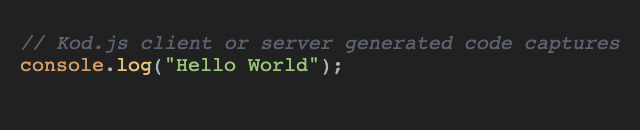

Kod.js
Kod.js is a code preview image generator that runs both in the browser and on Node JS. It is built using highlight.js and uses it for the themes and syntax highlighting.

Basic Usage
Here's a basic example that generates an image with console.log("Hello World") in it.
Node JS
1import fs from "fs";
2// Import the canvas module from NPM
3import { createCanvas } from "canvas";
4import kod from "kodjs";
5
6// Make a blank canvas that will be the main node
7// NOTE: This can be any size kod auto resizes the canvas to fit the code
8const canvas = createCanvas(100, 100);
9// Create a new kod instance;
10let k = new kod();
11
12// Initialize passing the canvas created eariler, the language the code is in, the theme (see highlightjs.org for a list of themes), and the background color
13k.init(canvas, "javascript", "atom-one-dark", "#212121").then(() => {
14 // Once kod is initialized use the print function to generate your canvas
15 // pass your code as the first argument
16 k.print(`console.log("Hello World")`)
17 // This returns a promise, when resolved it passes back the new canvas size as an object
18 .then((size) => {
19 console.log("printed", size);
20 // To export the image use the canvas module's toBuffer method and write it to a file
21 let buf = canvas.toBuffer("image/png", {
22 compressionLevel: 3,
23 filters: canvas.PNG_FILTER_NONE,
24 });
25 fs.writeFile("./test.png", buf, () => {
26 console.log("done");
27 });
28 });
29});
Browser
Include the script and add a canvas element to your document.
1<canvas></canvas>
2<script src="https://unpkg.com/kodjs/dist/kod.min.js">
This works the same as the Node JS one.
1const canvas = document.querySelector("canvas");
2let k = new kod();
3k.init(canvas, "javascript", "atom-one-dark", "#212121").then(() => {
4 k.print(`console.log("Hello World")`).then((size) => {
5 console.log("printed", size);
6 });
7});